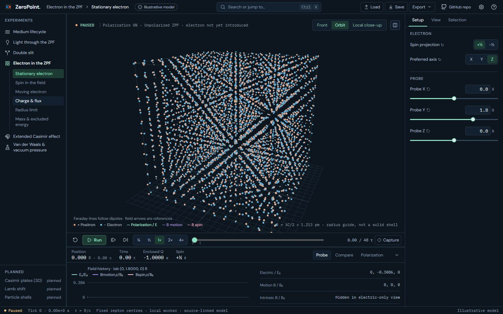
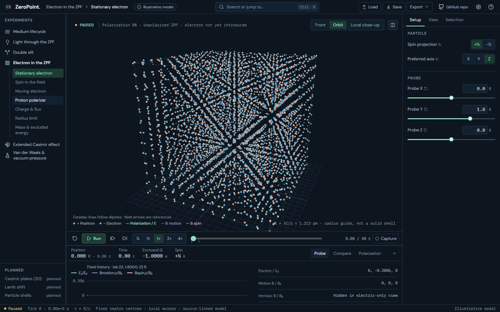
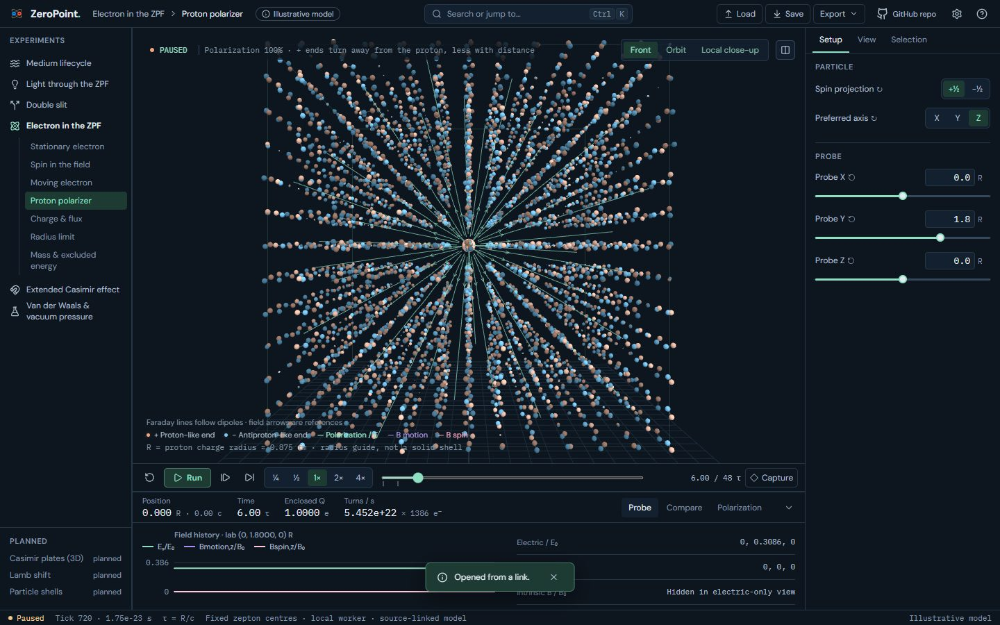
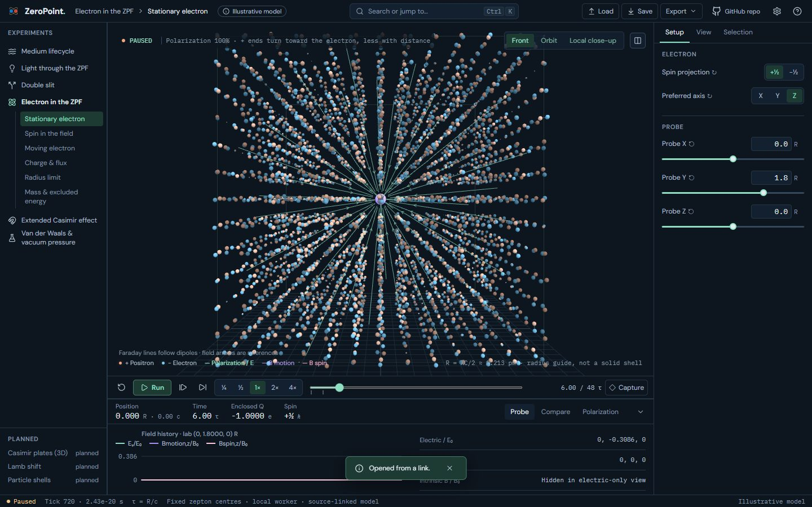
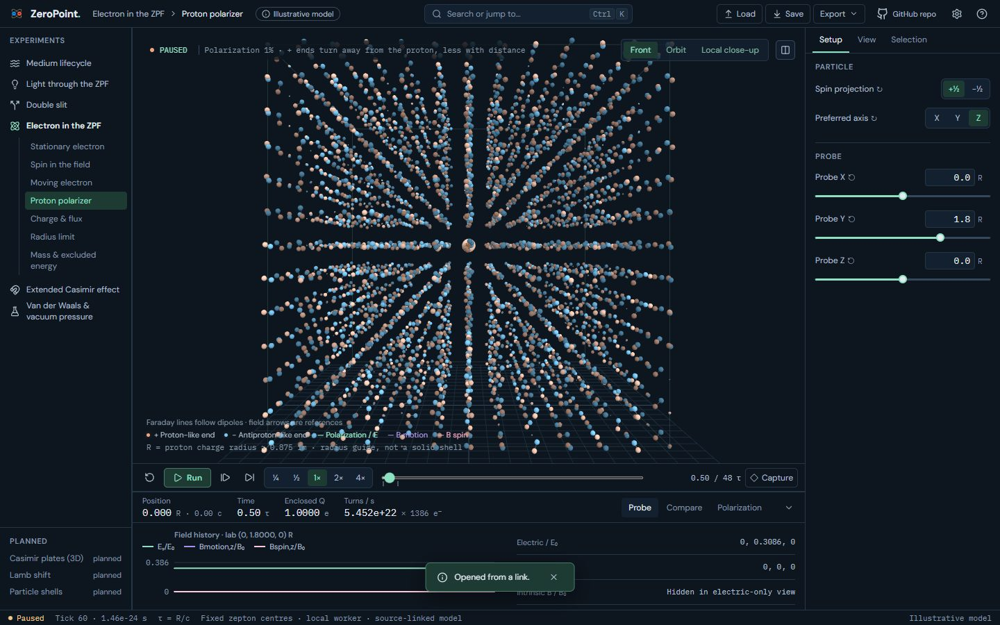
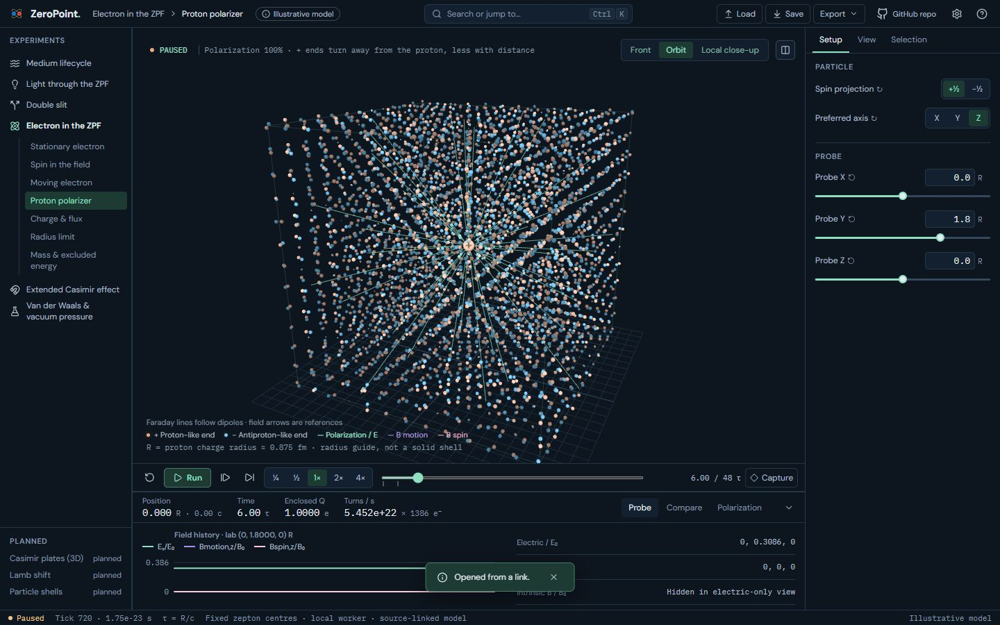
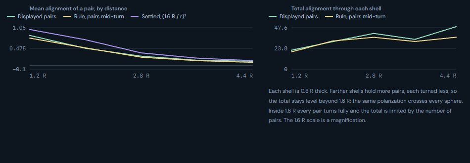
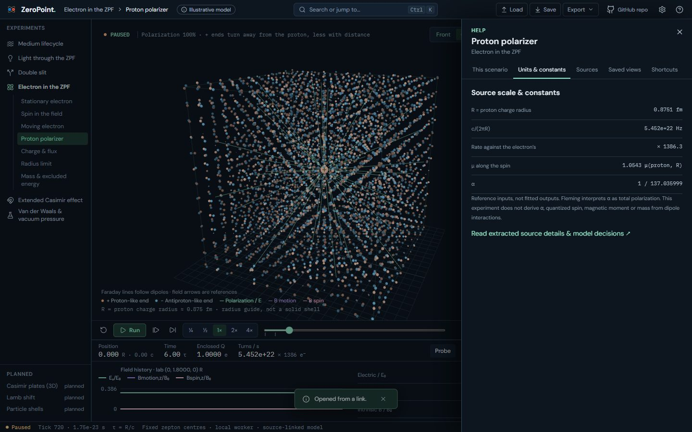
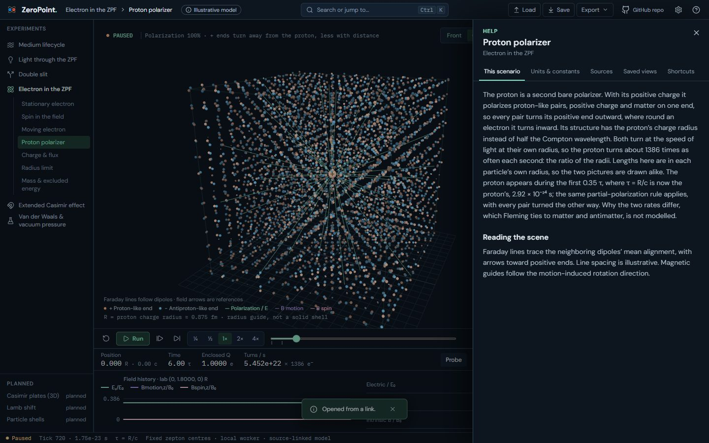

The proton as a second polarizer: before and after
A new Electron scenario after Fleming's 'Electron and proton radii are due to quantum polarization rate and the speed of light' (§1–4): the proton polarizes proton-like pairs, so they turn their positive ends outward, at its charge radius and about 1386 times the electron's turn rate.
Real screens: "before" runs the worktree given as --before (usually the layer below), and "after" runs this one. Click an image to open it at full size. Regenerate with node scripts/compare-screens.mjs --before ../23a-proton-model --out docs/ui-previews/23b-proton --set proton --title 'The proton as a second polarizer' --description 'A new Electron scenario after Fleming'\''s '\''Electron and proton radii are due to quantum polarization rate and the speed of light'\'' (§1–4): the proton polarizes proton-like pairs, so they turn their positive ends outward, at its charge radius and about 1386 times the electron'\''s turn rate.'.
The rail: Electron gains a Proton polarizer scenario; the Setup group reads Particle




Proton polarizer · tick 720, front: pairs turn their positive ends outward; Faraday lines run outward


Stationary electron · tick 720, front, for comparison: positive ends inward



Proton polarizer · tick 60: the proton appears, its core marked +


Proton polarizer · tick 720, orbit


Dock › Polarization round the proton: the same mean and total alignment, along its own field


Help › Units: the proton’s radius, turn rate (× 1386) and moment


Help › This scenario

